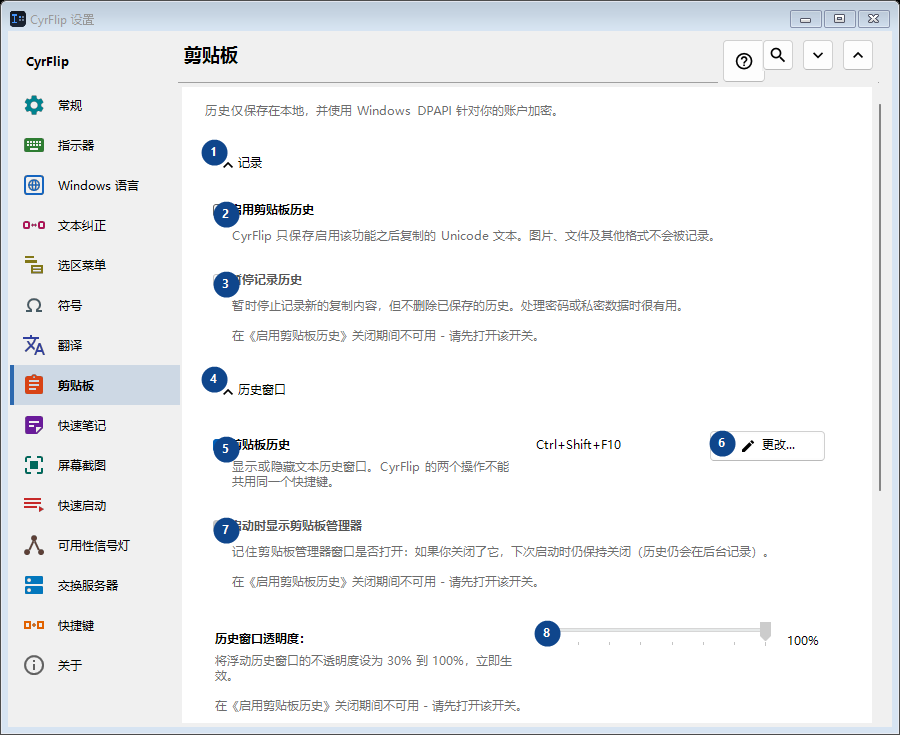
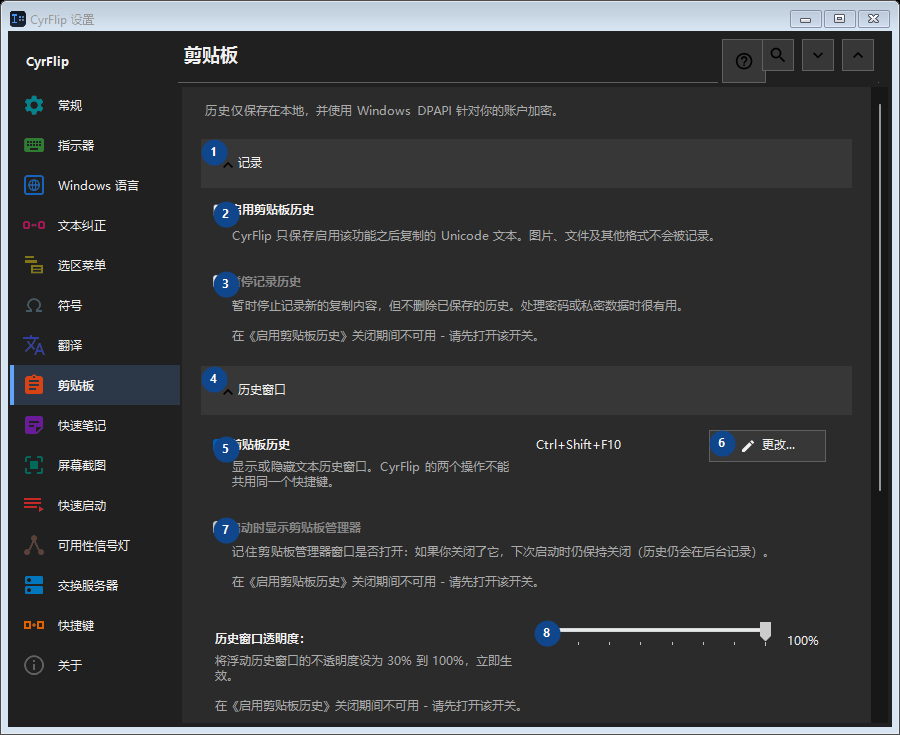

剪贴板
用途
历史仅保存在本地，并使用 Windows DPAPI 针对你的账户加密。


使用顺序
设置立即生效，无须按固定顺序操作；请使用以下分组。
界面元素
1. 记录
需要执行上述操作时使用此命令。接受前请阅读确认提示。
你的快捷键2. 启用剪贴板历史
CyrFlip 只保存启用该功能之后复制的 Unicode 文本。图片、文件及其他格式不会被记录。
你的快捷键3. 暂停记录历史
在《启用剪贴板历史》关闭期间不可用 - 请先打开该开关。 此控件当前不可用。请先启用相应功能或选择条目。
你的快捷键4. 历史窗口
需要执行上述操作时使用此命令。接受前请阅读确认提示。
你的快捷键5. 剪贴板历史
显示或隐藏文本历史窗口。CyrFlip 的两个操作不能共用同一个快捷键。
你的快捷键6. 更改 - 剪贴板历史
需要执行上述操作时使用此命令。接受前请阅读确认提示。
你的快捷键7. 启动时显示剪贴板管理器
在《启用剪贴板历史》关闭期间不可用 - 请先打开该开关。 此控件当前不可用。请先启用相应功能或选择条目。
你的快捷键8. 历史窗口透明度：
在《启用剪贴板历史》关闭期间不可用 - 请先打开该开关。 此控件当前不可用。请先启用相应功能或选择条目。
你的快捷键9. 搜索历史
打开一个独立窗口，按文本片段搜索。至少输入三个字符才能搜索。
你的快捷键10. 清除
需要执行上述操作时使用此命令。接受前请阅读确认提示。
你的快捷键11. 清除全部历史
从内存和加密的本地文件中删除所有条目。此操作无法撤销。
你的快捷键12. 迁移到另一台电脑
需要执行上述操作时使用此命令。接受前请阅读确认提示。
你的快捷键13. 导出...
一个包含笔记和所选剪贴板历史的公开文本文件：可在任何编辑器或手机上阅读，也可在另一台电脑上导入 CyrFlip。该文件不加密。导入会先显示将添加的内容，且不会删除任何数据。
你的快捷键14. 导入...
需要执行上述操作时使用此命令。接受前请阅读确认提示。
你的快捷键